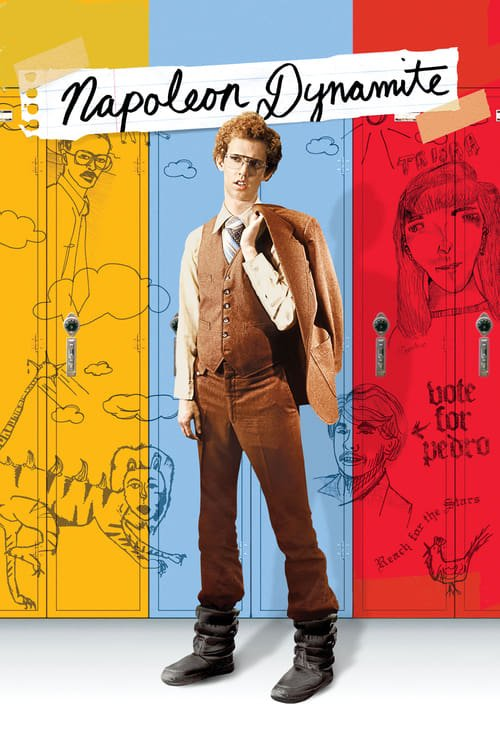

Napoleon Dynamite (2004)
Sinopsis Rápida
Napoleon Dynamite: Un chico peculiar, su excéntrica familia y un tacaño llama llamado Tina. ¿Suena extraño? Prepárate para una comedia inolvidable que definirá tu idea de 'normal'.
Sinopsis Detallada
Napoleon Dynamite, un adolescente torpe e introvertido, intenta navegar por la vida en medio de una familia disfuncional en Idaho. Su inusual amistad con Deb y su improbable campaña para ayudar a su hermano Kip a encontrar el amor, lo llevan a una serie de situaciones hilarantes y sorprendentes. La película es una sátira genial de la vida suburbana estadounidense, con personajes extravagantes y un humor seco e irónico que la hacen única. Su estilo visual distintivo y su banda sonora icónica contribuyen a su encanto singular.
¿Por qué tenés que verla?
- Una comedia peculiar e hilarante que te hará reír a carcajadas.
- El estilo visual único y la banda sonora memorable, crean una experiencia cinematográfica inigualable.
- Su impacto cultural es innegable; Napoleon Dynamite se ha convertido en un fenómeno de culto con frases icónicas que han pasado a la historia popular.
- Personajes memorables y situaciones completamente inesperadas.
Idea Extra
Análisis del impacto cultural de Napoleon Dynamite: ¿Cómo una película independiente se convirtió en un fenómeno de culto?